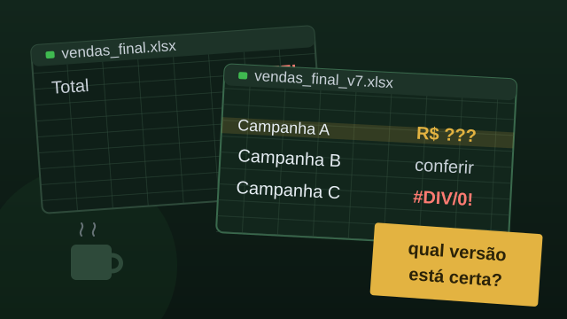
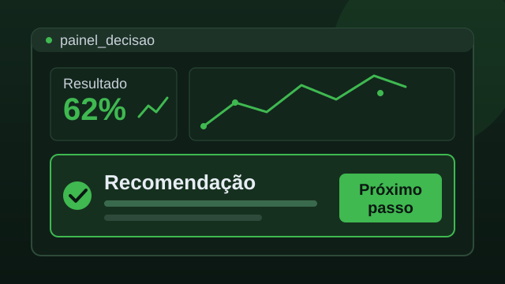

para quem lidera dados e analytics
Você entrega a análise. Ninguém age.
- A reunião termina em “vamos ver”
- Hipótese vira plano sem passar pelos dados
- O time perde a confiança na análise
Analista de Dados em Marketing Analytics & Growth. Do problema do negócio a uma resposta que você consegue defender.


A crença de um banco, depois de passar pelos dados. Método no lugar do palpite.
Quatro análises, quatro decisões. O passo a passo está no Medium.
9.684 clientes: a crença que guiava a campanha foi testada.
Ler no Medium →Cerca de 5,5 mil pedidos mostraram onde a intuição falha.
Ler no Medium →200 atendimentos deram a régua que faltava.
Ler no Medium →Quem cancela mais e quando: permanência média de 8,4 meses.
Ler no Medium →Sou o Leandro, Analista de Dados com foco em Marketing Analytics e Growth. Há mais de 8 anos analiso dados de empresas, pelo marketing e como Product Owner.
No marketing, o dado precisa provar resultado. No produto, precisa orientar o que construir primeiro. Toda recomendação minha tem origem rastreável e um próximo passo claro.
Conte a decisão que está travada e eu respondo com o caminho.